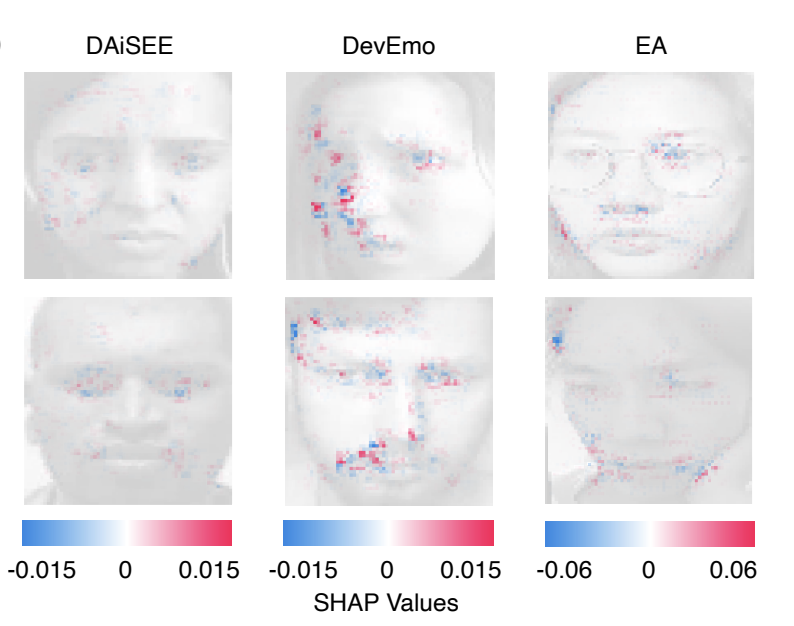
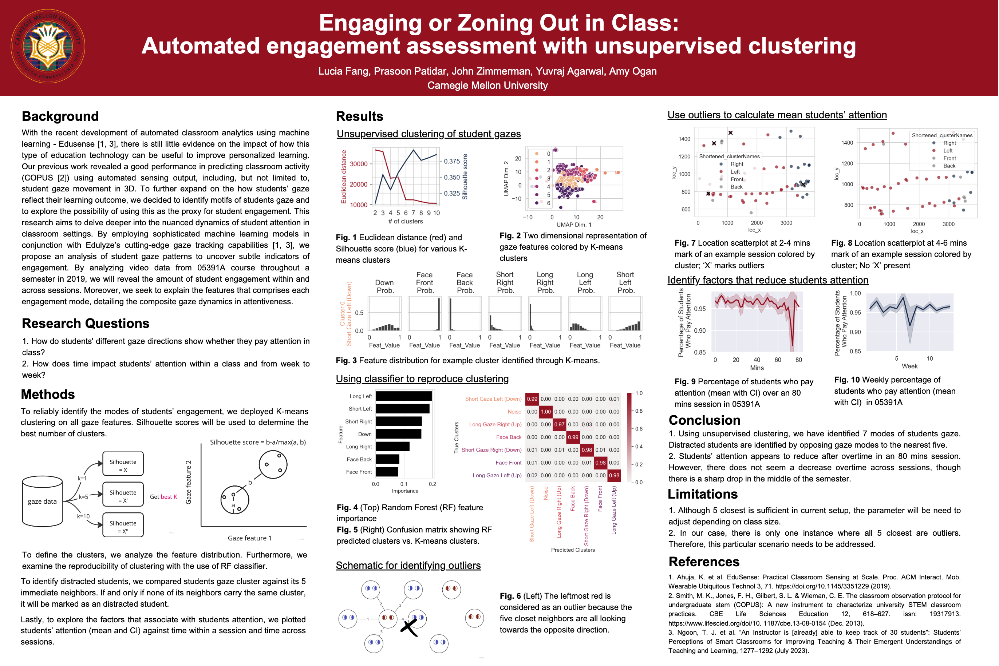

Research

Published
A Cross-Cultural Confusion Model for Detecting and Evaluating Students' Confusion In a Large Classroom
The 15th International Learning Analytics and Knowledge Conference, 2025

Presented
Engaging or Zoning Out in Class: Automated Engagement Assessment with Unsupervised Clustering
Presented at the Meeting of the Minds Undergraduate Research Symposium, 2024